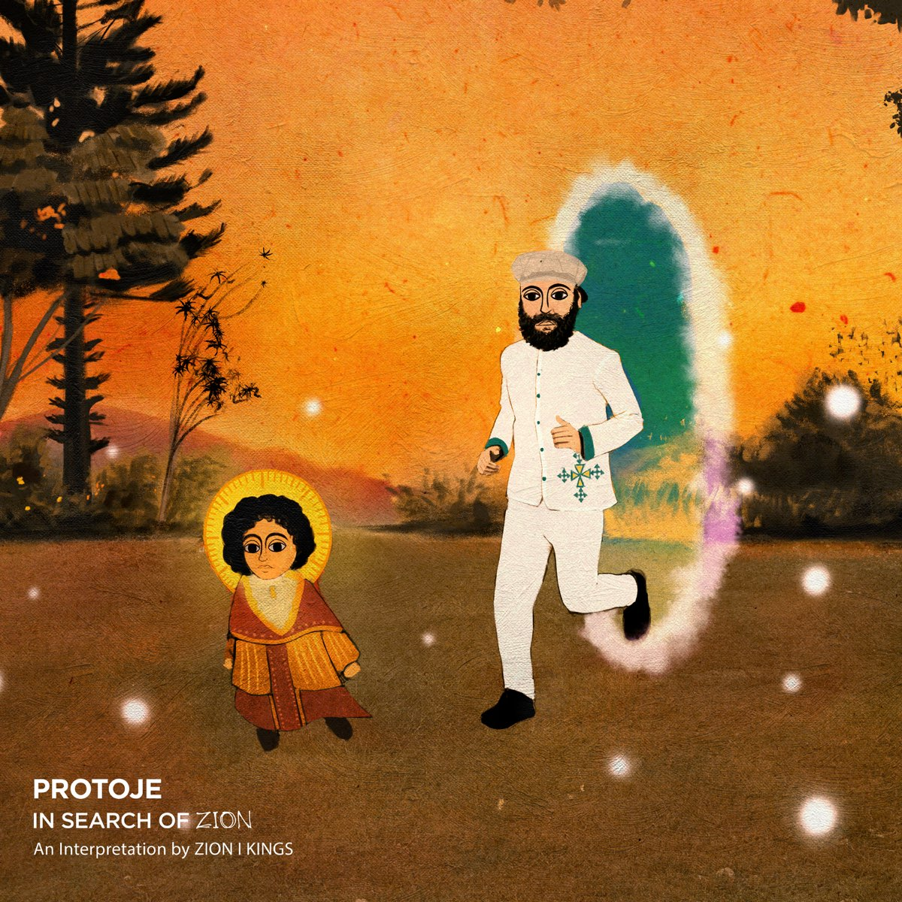
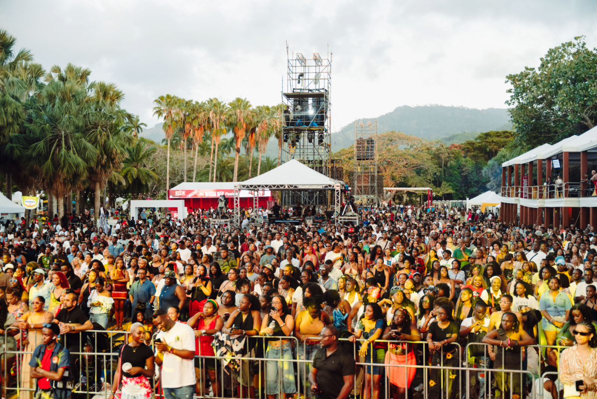

New Wave Reggae Music
Oct 07, 2026 by Damanic Duffus

As a self proclaimed music enthusiast, reggae music is one of my favourite genres. Growing up in the Jamaican countryside, I was exposed to the sounds of reggae from an early age. Growing up and seeing how the genre has evolved and being able to experience it firsthand has been an interessting journey. Thanks to artists like Protoje and Chronixx we have a new wave of very good reggae music from artists with a unique sound, that still embraces the foundational elements of reggae music.
Emergence of Reggae Festivals in Jamaica

Reggae festivals are not new, but a well-organized experience with amazing performances is something that we are only recently seeing in Jamaica. Yes there has been the one off event that was good but annual experiences to look forward to, for me at least, are new. The Lost in Time Festival, introduced in February 2023, is one such festival that is an experience, as someone who has attended all shows, it gets better every production . It introduces you to artists and also is a space where you get to enjoy artists that you already know or are a fan of. It is a true celebration of reggae music and Jamaican culture